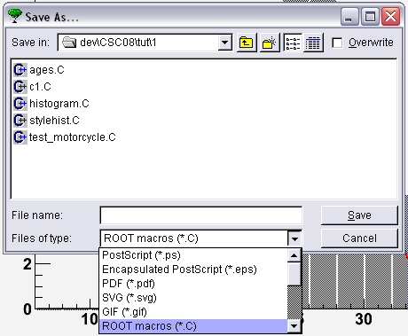
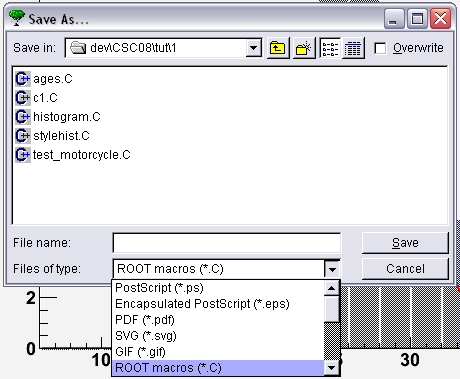

From the Canvas's file menu, select the entry Save As...

a File Dialog will popup, where you can select the type of file you want to save, and the file name. Select C files in the combo box and styleshist.C in the file name field.


Got stuck? This might help:
Save the histogram to styledhist.C (e.g. see the Canvas's file menu, or right-click the histogram) and look at that saved file. Restart ROOT and run styleshist.C to check that ROOT really does store the histogram as C++ code.
To save the source code from your modified histogram, you have three options:
From the Canvas's file menu, select the entry Save As...
a File Dialog will popup, where you can select the type of file you want to save, and the file name. Select C files in the combo box and styleshist.C in the file name field.

From the Canvas's file menu, select Save->c1.C and then rename the file c1.C to styleshist.C

Right-click the histogram, from the context menu, select Save As.


then type the file name and click on the "OK" button.